การไฟฟ้าฝ่ายผลิตแห่งประเทศไทย (กฟผ.) กำลังศึกษาเพื่อขอเปลี่ยนแปลงรายละเอียดโครงการ 2 เรื่องที่เกี่ยวข้องกัน คือ โรงไฟฟ้าแม่เมาะ และเหมืองลิกไนต์แม่เมาะ หน้านี้เล่าว่าเปลี่ยนอะไร เพราะอะไร และศึกษาผลกระทบอย่างไร
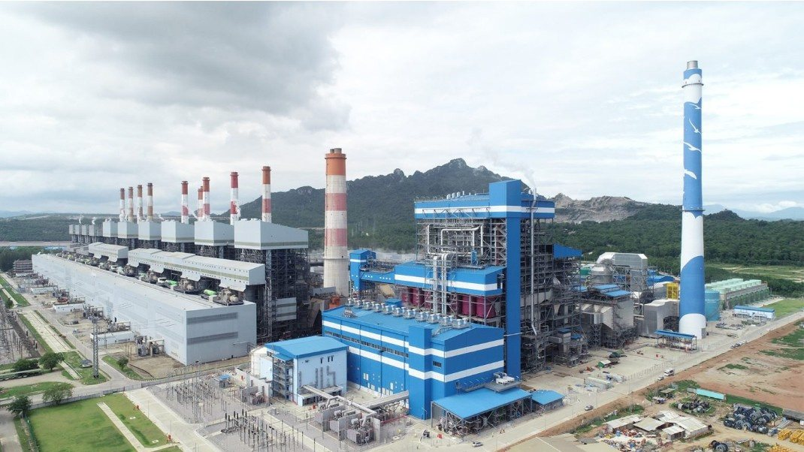
โรงไฟฟ้าแม่เมาะรายงานการเปลี่ยนแปลงฯ EHIA ครั้งที่ 3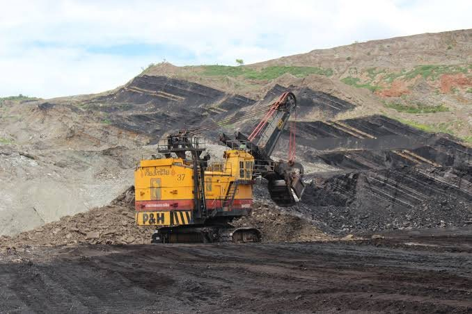
เหมืองลิกไนต์แม่เมาะรายงานการเปลี่ยนแปลงฯ EIA ครั้งที่ 1เลื่อนลงเพื่ออ่านต่อ ↓
เหมืองแม่เมาะขุดถ่านหินลิกไนต์ส่งให้โรงไฟฟ้าแม่เมาะผลิตไฟฟ้า เมื่อแผนการเดินเครื่องของโรงไฟฟ้าเปลี่ยน ปริมาณถ่านหินที่ต้องใช้ก็เปลี่ยน ซึ่งเป็นเหตุผลส่วนหนึ่งที่แผนการทำเหมืองต้องปรับตาม
การเปลี่ยนแปลงรายละเอียดโครงการในรายงานการประเมินผลกระทบสิ่งแวดล้อม สำหรับโครงการที่อาจมีผลกระทบต่อชุมชนอย่างรุนแรง (EHIA) ครั้งที่ 3
เริ่มจากแผนการเดินเครื่องของโรงไฟฟ้าแม่เมาะแต่ละเครื่อง
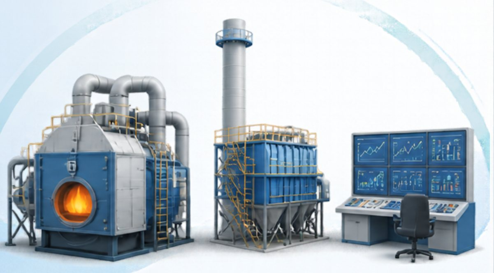
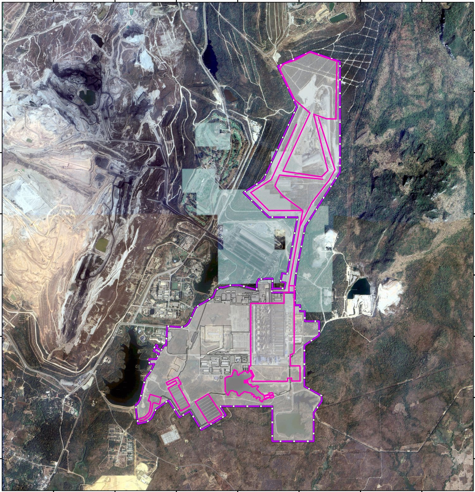
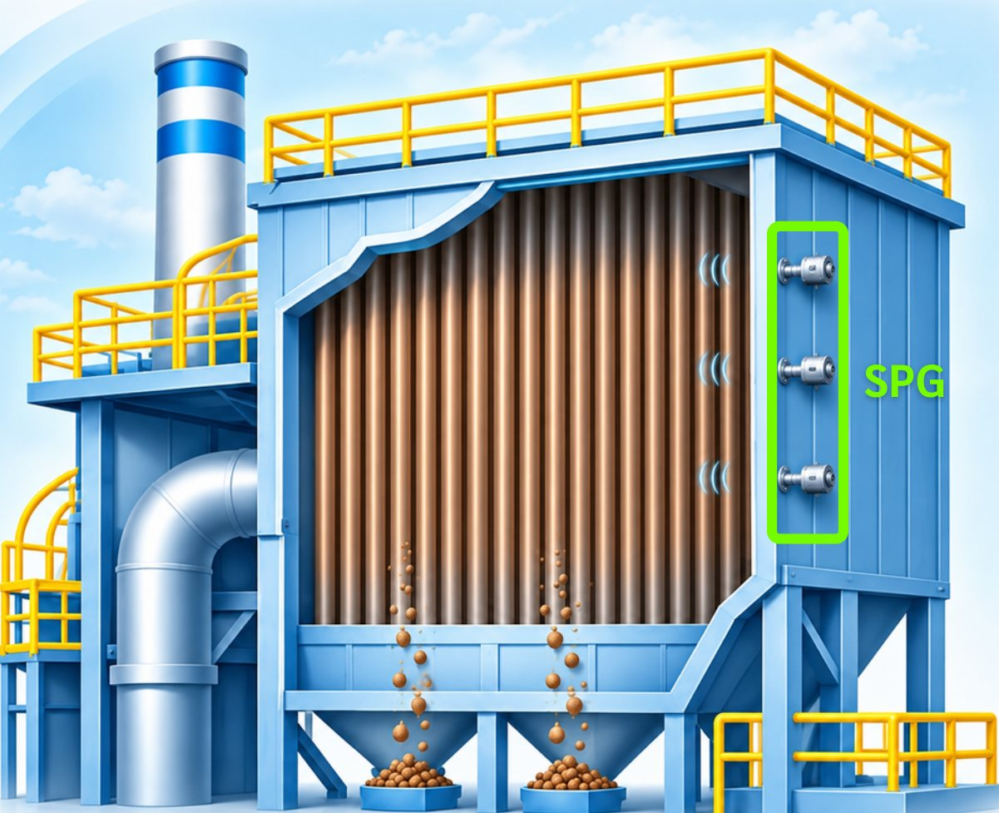
ลิกไนต์ที่ขุดได้ในช่วงต่อไปมีแคลเซียมออกไซด์สูงขึ้น จึงต้องปรับการเผาไหม้และหม้อไอน้ำ และควบคุมการปล่อยอากาศเสียให้เป็นไปตามมาตรฐานการควบคุมการปล่อยทิ้งอากาศเสียจากโรงไฟฟ้า พ.ศ. 2566
หลังปรับปรุง ค่าควบคุม SO₂ ลดจาก 270 เหลือ 110 ppm และ NOₓ จาก 350 เหลือ 150 ppm และเริ่มมีค่าควบคุมฝุ่นละออง 30 มก./ลบ.ม.
เพื่อให้สอดคล้องกับคุณสมบัติเชื้อเพลิง และสภาพของอุปกรณ์ตามวงรอบอายุการทำงานของระบบบำบัดมลสาร ค่าที่ขอปรับยังไม่เกินค่ามาตรฐาน
มุ่งแก้ปัญหาฝุ่น PM 2.5 ที่เกิดจากการเผาเศษวัสดุเหลือใช้ทางการเกษตรในที่โล่งแจ้ง และสร้างรายได้ให้กับชุมชนในพื้นที่
ผนวกอาคาร สิ่งปลูกสร้างและสาธารณูปโภคให้สอดคล้องกับการดำเนินงานจริง เพื่อประกอบการแก้ไขใบอนุญาต ร.ง.4
Shock Pulse Generator ช่วยกำจัดตะกรันระหว่างเดินเครื่อง รักษาประสิทธิภาพการถ่ายเทความร้อน และลดความถี่ในการหยุดทำความสะอาด
ครอบคลุมทั้งระยะก่อสร้างและระยะดำเนินการ
ทบทวนข้อมูลเดิมและผลติดตามสิ่งแวดล้อม
เปรียบเทียบรายละเอียดเดิมกับรายละเอียดที่มีการเปลี่ยนแปลง
ประเมินผลกระทบสิ่งแวดล้อมและสุขภาพ
ทบทวนมาตรการป้องกันและแก้ไข และติดตามตรวจสอบ
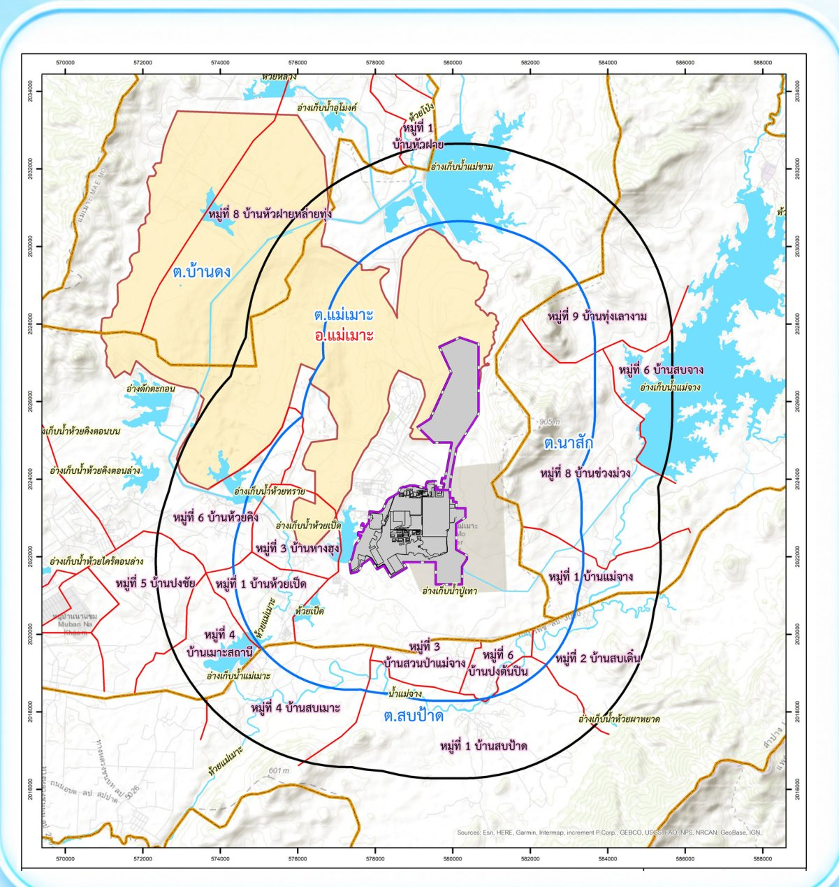
1. ทรัพยากรสิ่งแวดล้อมทางกายภาพ
สภาพภูมิอากาศ อุตุนิยมวิทยา และคุณภาพอากาศ · เสียงและความสั่นสะเทือน · คุณภาพน้ำผิวดิน
2. ทรัพยากรสิ่งแวดล้อมทางชีวภาพ
ทรัพยากรชีวภาพในน้ำ
3. คุณค่าการใช้ประโยชน์ของมนุษย์
การจัดการขยะมูลฝอย · การคมนาคมขนส่ง · การประเมินอันตรายร้ายแรง/การป้องกันและระงับอัคคีภัย
4. คุณค่าต่อคุณภาพชีวิต
สภาพเศรษฐกิจ-สังคม · การมีส่วนร่วมของประชาชน · สาธารณสุขและอาชีวอนามัย
รายงานการเปลี่ยนแปลงรายละเอียดโครงการและมาตรการป้องกันและแก้ไขผลกระทบสิ่งแวดล้อมในรายงานการประเมินผลกระทบสิ่งแวดล้อม (EIA) ครั้งที่ 1
การขยายอายุการปลดโรงไฟฟ้าถ่านหินแม่เมาะ ทำให้ใช้ถ่านหินจากเหมืองมากกว่าแผนการผลิตเดิม ปริมาณสำรองลิกไนต์จึงลดลงเร็วขึ้น
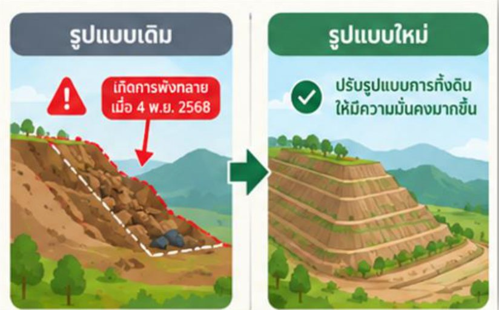
หลังการพังทลายของที่ทิ้งดินด้านตะวันตกเฉียงใต้ เมื่อวันที่ 4 พฤศจิกายน 2568 เหมืองได้ประเมินเสถียรภาพความลาดใหม่ และเห็นควรปรับรูปแบบการทิ้งดิน
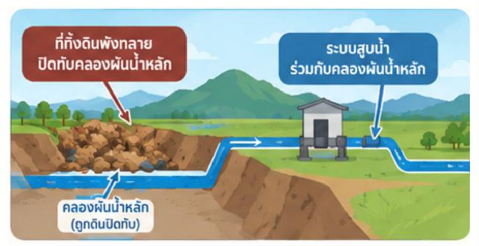
จึงใช้ระบบสูบน้ำร่วมกับคลองผันน้ำหลัก เพื่อไม่ให้กระทบชุมชนรอบพื้นที่ การขุดดินออกจากคลองจะทำหลังศึกษาวิธีที่ไม่ทำให้มวลดินเคลื่อนตัว
| หัวข้อ | ฉบับปัจจุบัน | ฉบับขอเปลี่ยนแปลง |
|---|---|---|
| ข้อ 4 วิธีการทำเหมือง แผนการเดินหน้าเหมือง |
|
|
| ข้อ 7 วิธีเก็บน้ำขุ่นข้นและมูลดินทราย การทิ้งดินในพื้นที่แผนผังโครงการเดิม |
|
|
| ข้อ 7 (ต่อ) การทิ้งดินในพื้นที่ส่วนที่ขอขยายเพิ่มเติม |
— |
|
| ข้อ 9 วิธีระบายน้ำจากการทำเหมือง | ระบายน้ำบางส่วนด้วยคลองผันน้ำหลัก (Main Diversion) | ใช้ระบบสูบน้ำข้ามมวลดินสไลด์ เพื่อระบายน้ำบางส่วนทดแทนคลองผันน้ำหลักที่เกิดความเสียหาย |
ความต้องการถ่านหินและปริมาณดินขุด-ขน พ.ศ. 2569–2578 ออกแบบตามอายุประทานบัตร
ถ่านหินลิกไนต์สำหรับโรงไฟฟ้าแม่เมาะ จำนวน 3 เครื่อง
ดินที่ต้องขุด-ขนออกเพื่อให้ได้ถ่านหินตามความต้องการ
แถวล่าง: ปริมาณถ่านหินรายปี (ล้านตัน)
ระดับความสูงเป็นเมตรจากระดับทะเลปานกลาง (ม.รทก.) · การทิ้งดินลำเลียงโดยระบบสายพาน · C Area = กลางแอ่ง, NE = ตะวันออกเฉียงเหนือ, SE = ตะวันออกเฉียงใต้, SW = ตะวันตกเฉียงใต้
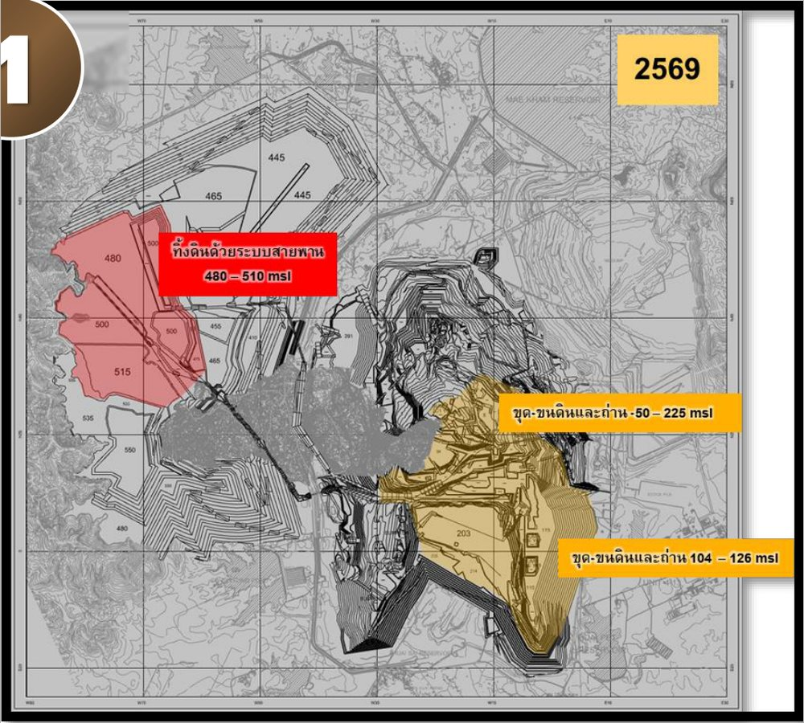
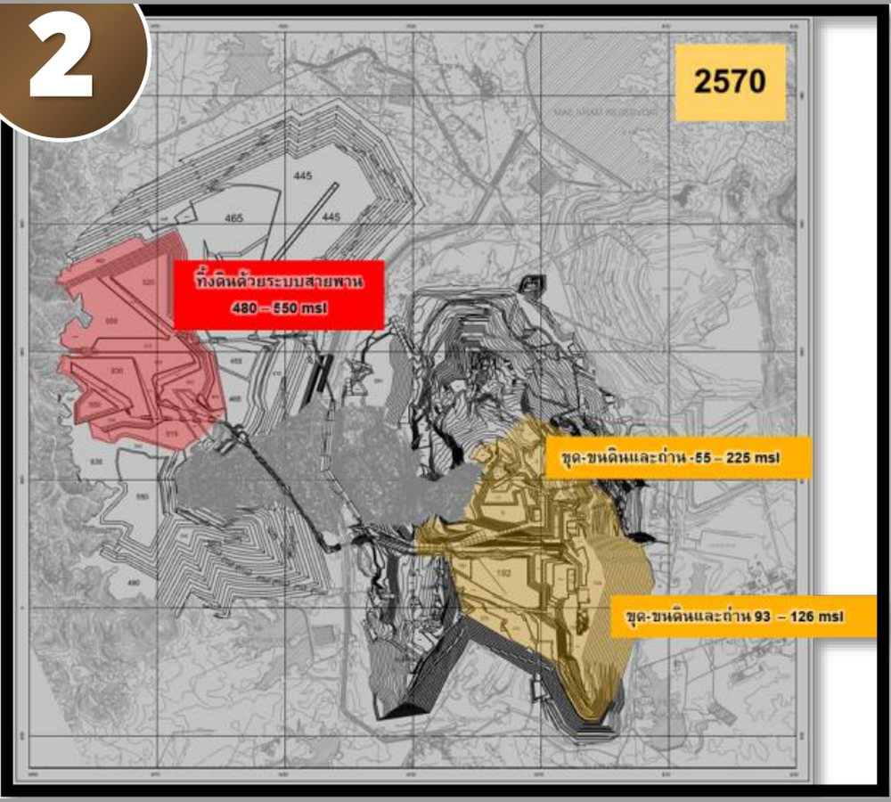
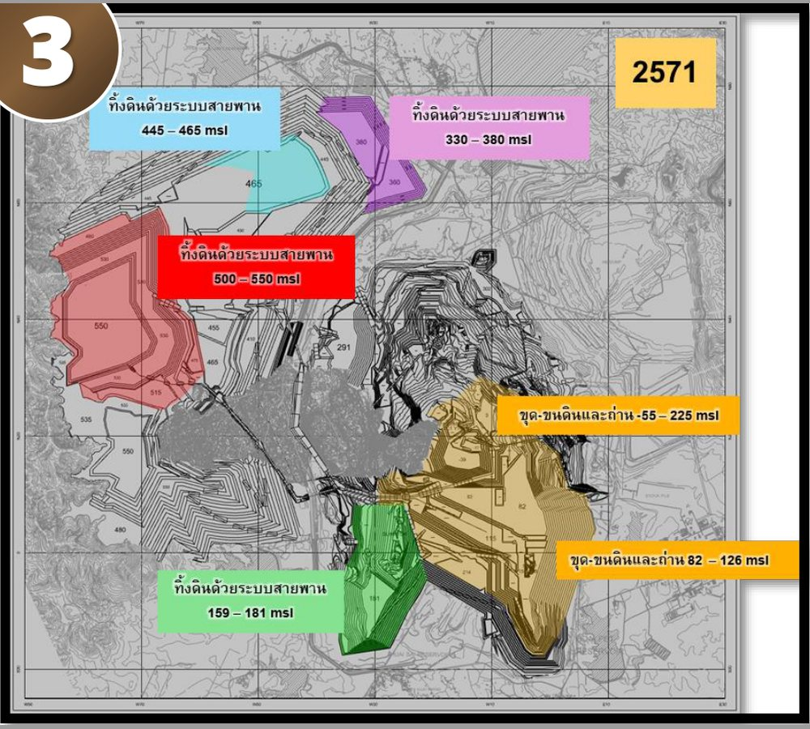
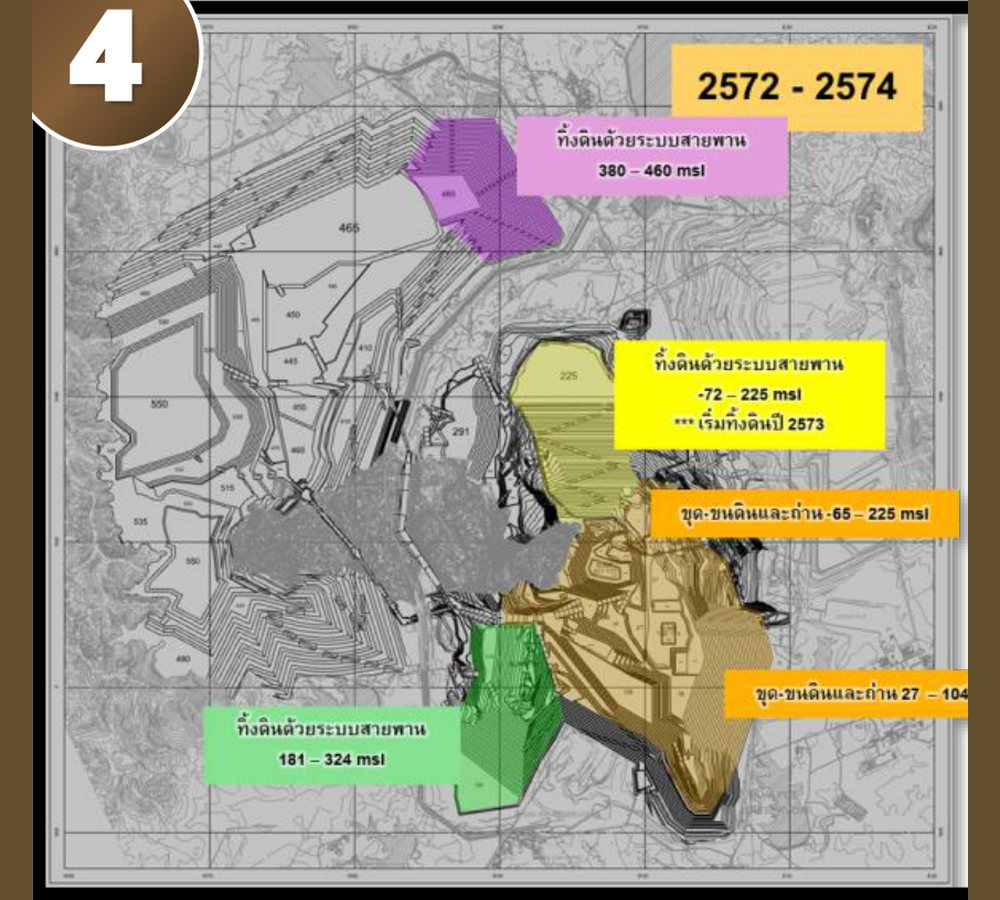
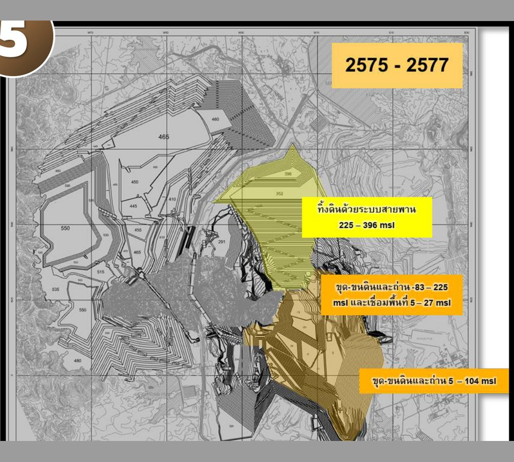
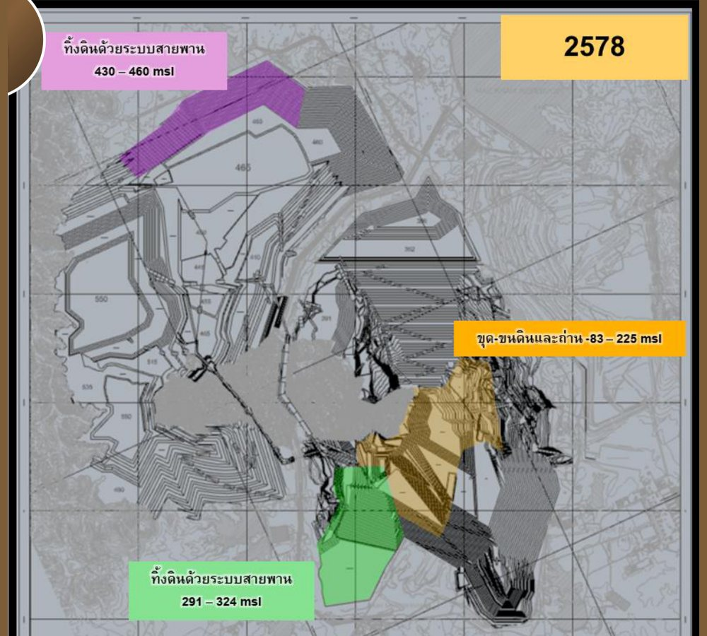
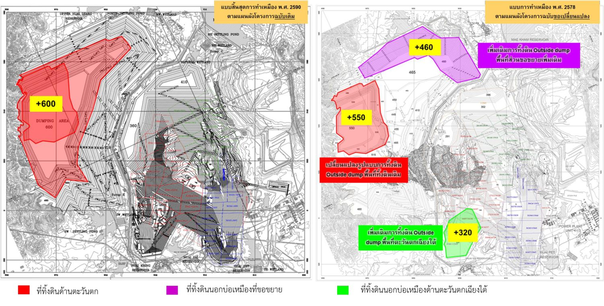
ครอบคลุมพื้นที่ประมาณ 6.11 ตร.กม. โดยจะขุดลอกและเคลียร์พื้นผิว เพื่อกำจัดวัสดุอ่อนและสิ่งกีดขวางก่อนทิ้งดิน
ครอบคลุมพื้นที่ประมาณ 2.23 ตร.กม. เป็นบ่อเหมืองเดิมที่ขุดถ่านหินระดับตื้นออกหมดแล้ว และ กฟผ. คืนประทานบัตรไปแล้ว
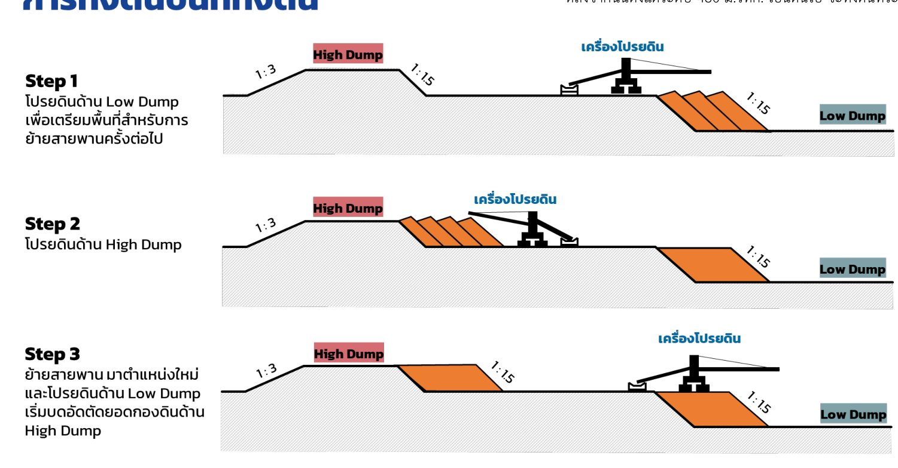
ปรับระดับพื้นที่เดิมจากรูปแบบการถมตามแผนผังเดิม สู่ระดับ 485 ม.รทก. จากนั้นจะทิ้งดินทั้งแบบกองต่ำ (Low Dump) และกองสูง (High Dump) ที่ความสูงชั้นละไม่เกิน 10 เมตร
ทำร่องระบายน้ำบนชั้นตะพักเพื่อป้องกันการกัดเซาะของน้ำ โดยดึงน้ำจากที่ทิ้งดินไปลงยัง Settling Pond ซึ่งมีอยู่ทั้งทางทิศเหนือและทิศใต้ของที่ทิ้งดิน
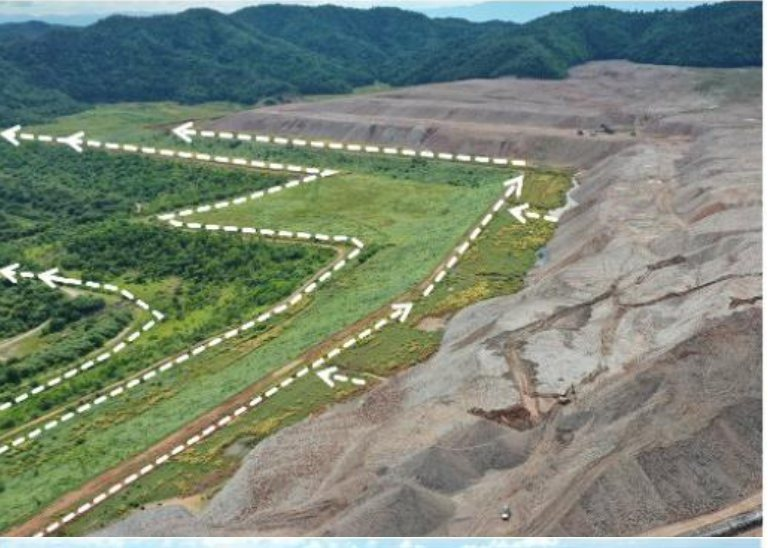
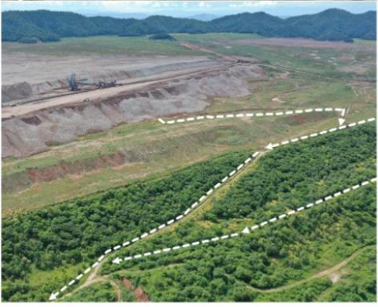
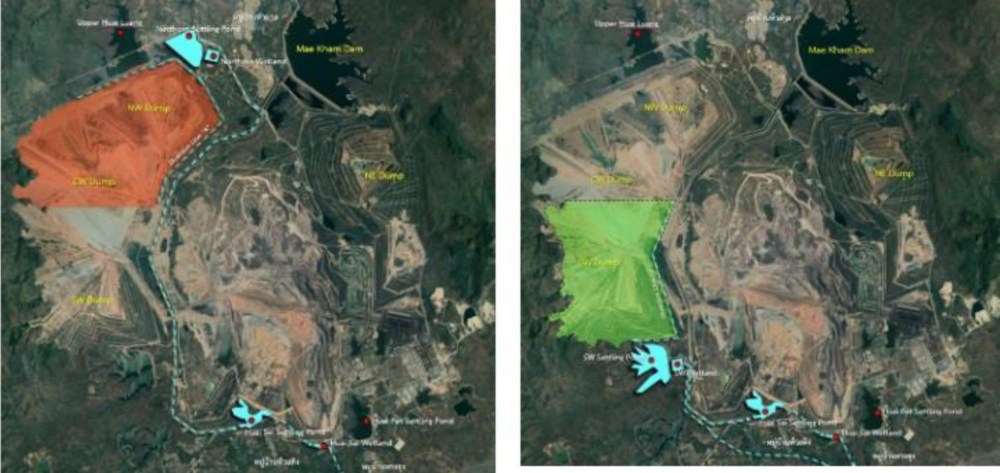
ระบบสูบน้ำปัจจุบันมีขนาดประมาณ 8,000 ลบ.ม./ชม. และในปี พ.ศ. 2570 จะติดตั้งเพิ่มเติมรวมเป็น 30,000 ลบ.ม./ชม. สำหรับที่ทิ้งดินตะวันตกเฉียงเหนือ (NW Dump)
น้ำจะเข้าสู่ระบบบำบัดทางด้านใต้ (Huai Sai Settling Pond และ Huai Sai Wetland) ก่อนระบายลงสู่อ่างเก็บน้ำแม่เมาะและท้ายน้ำ
บริเวณ SW Area: น้ำจากที่ทิ้งดินจะไหลลงสู่บ่อเหมือง ผ่านระบบบำบัด ก่อนระบายลงสู่อ่างเก็บน้ำแม่เมาะและท้ายน้ำ โดยบางส่วนจะส่งให้ราษฎรบ้านห้วยคิงใช้เพื่อการเกษตรในช่วงฤดูแล้ง
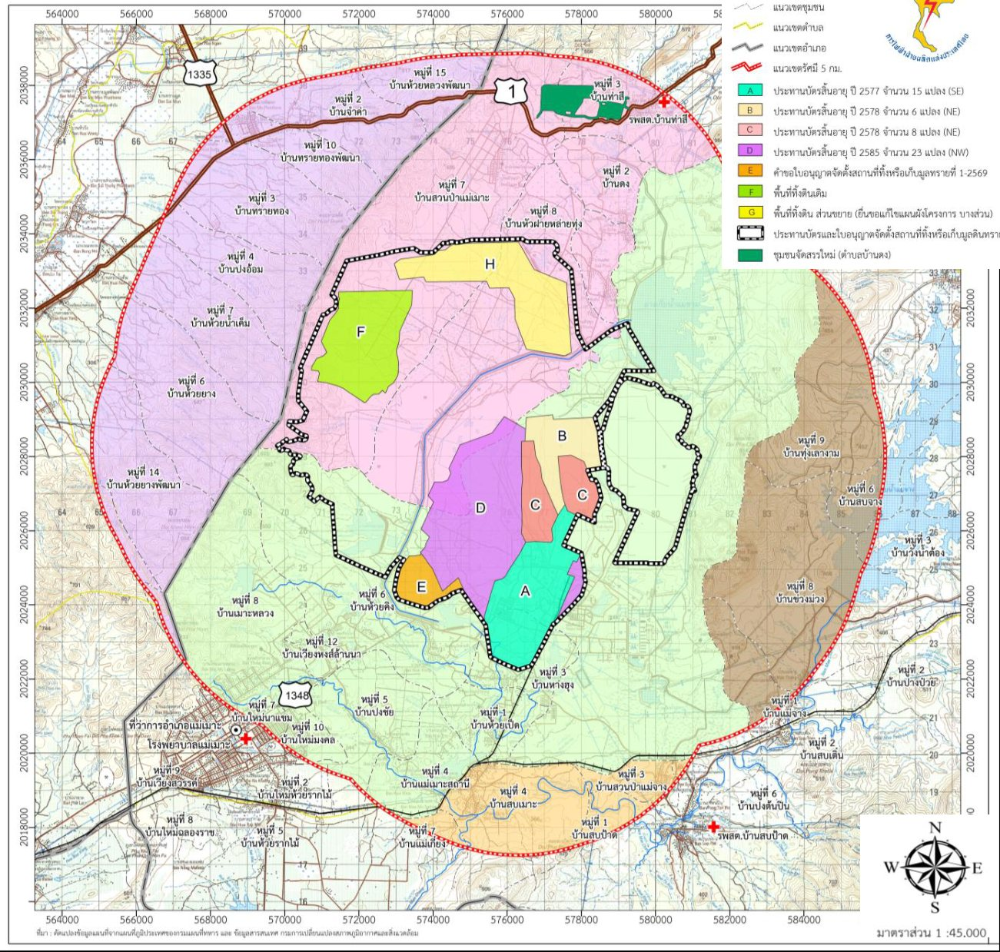
1 จังหวัด 2 อำเภอ 5 ตำบล
มลพิษทางอากาศ · มลพิษทางเสียง · มลพิษทางน้ำ · เสถียรภาพดิน
ด้านเสถียรภาพดินใช้ดัชนีชี้วัด เช่น ค่าปัจจัยความปลอดภัย (Factor of Safety: FOS) อัตราการเคลื่อนตัวของลาดดิน การทรุดตัวและการแตกร้าวของพื้นดิน ระดับน้ำใต้ดินและแรงดันน้ำในช่องว่าง การกัดเซาะและพังทลายของดิน และประสิทธิภาพของระบบระบายน้ำทั้งโรงไฟฟ้าและเหมืองมีกำหนดจัดเวทีรับฟังความคิดเห็นของประชาชนในช่วงกุมภาพันธ์ – มีนาคม 2570
รูปแบบตามแผนของโรงไฟฟ้า ซึ่งกำหนดรายละเอียดไว้แล้ว ส่วนเหมืองกำหนดขั้นตอนและกรอบเวลาไว้ในแผนการดำเนินงาน
เข้าพบหน่วยงานราชการระดับจังหวัด ระดับอำเภอ อปท. และผู้นำชุมชน เพื่อชี้แจงและรับฟังข้อห่วงกังวล
ผ่านแผ่นพับ ป้ายประกาศ และเว็บไซต์
6 เวทีย่อย ได้แก่ ต.แม่เมาะ ต.สบป้าด ต.นาสัก ต.จางเหนือ ต.บ้านดง และหน่วยงานราชการ
สำรวจเศรษฐกิจ สังคม และความคิดเห็นด้วยแบบสอบถาม
แจ้งจัดเวทีผ่านอย่างน้อย 3 ช่องทาง
เผยแพร่เอกสาร และเปิดลงทะเบียนล่วงหน้า
ชี้แจง เปิดซักถาม และรับข้อเสนอแนะ
เปิดรับความคิดเห็นเพิ่มเติม
ตอบประเด็นและนำไปปรับปรุงรายงาน
ตัวอย่างช่องทางการสื่อสาร: ป้ายประกาศ · เว็บไซต์ · เอกสาร · โทรศัพท์
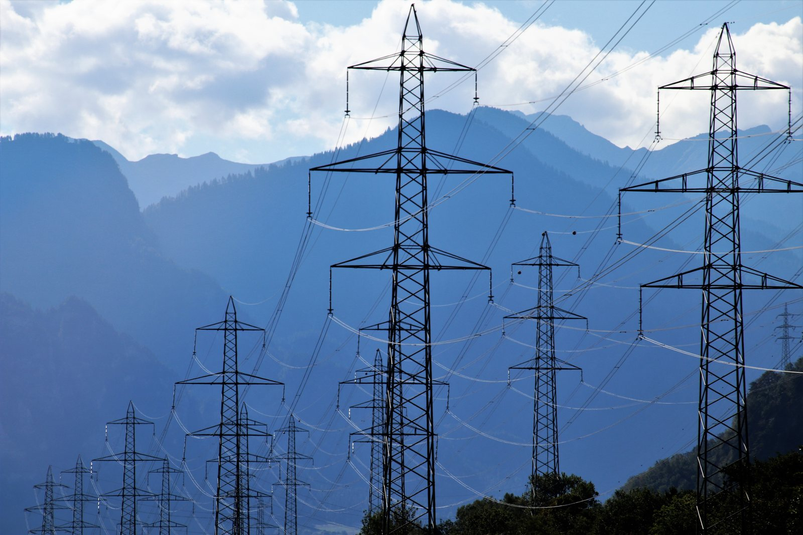
ข้อเสนอแนะจะถูกนำไปปรับแผนการศึกษาและการทำงานในพื้นที่